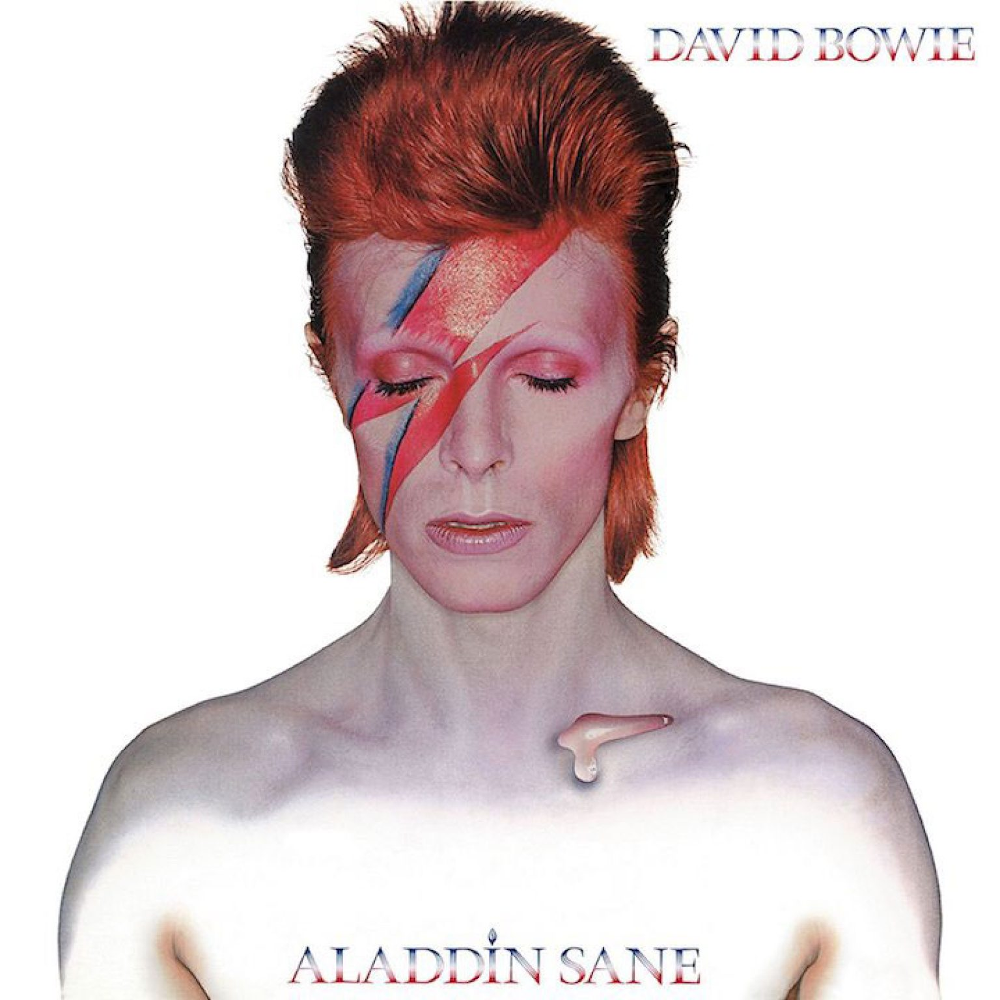
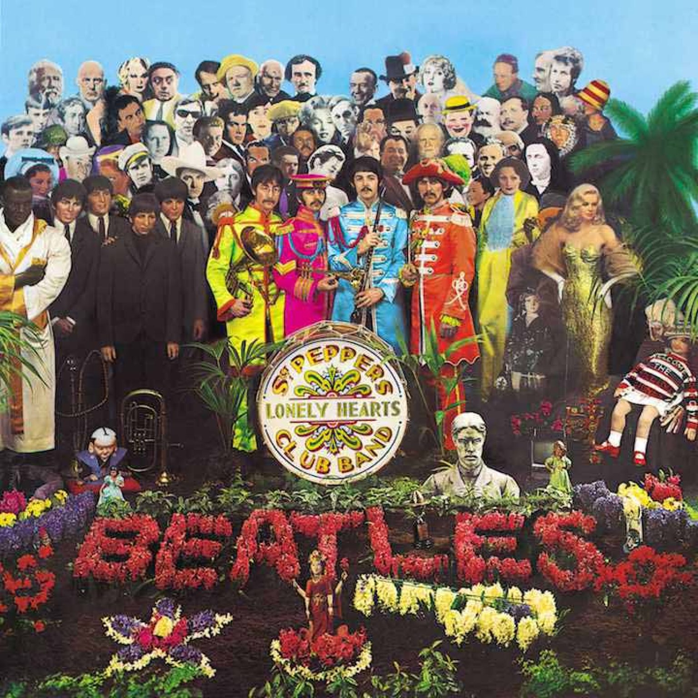
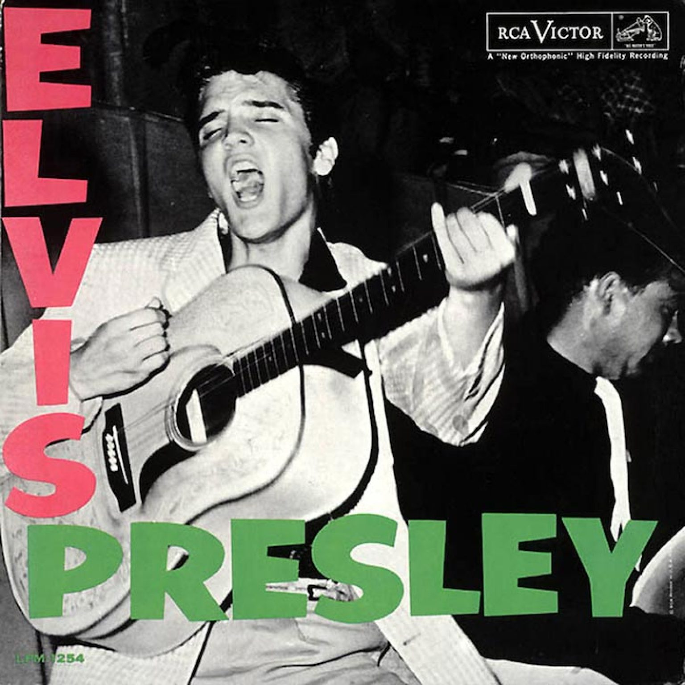
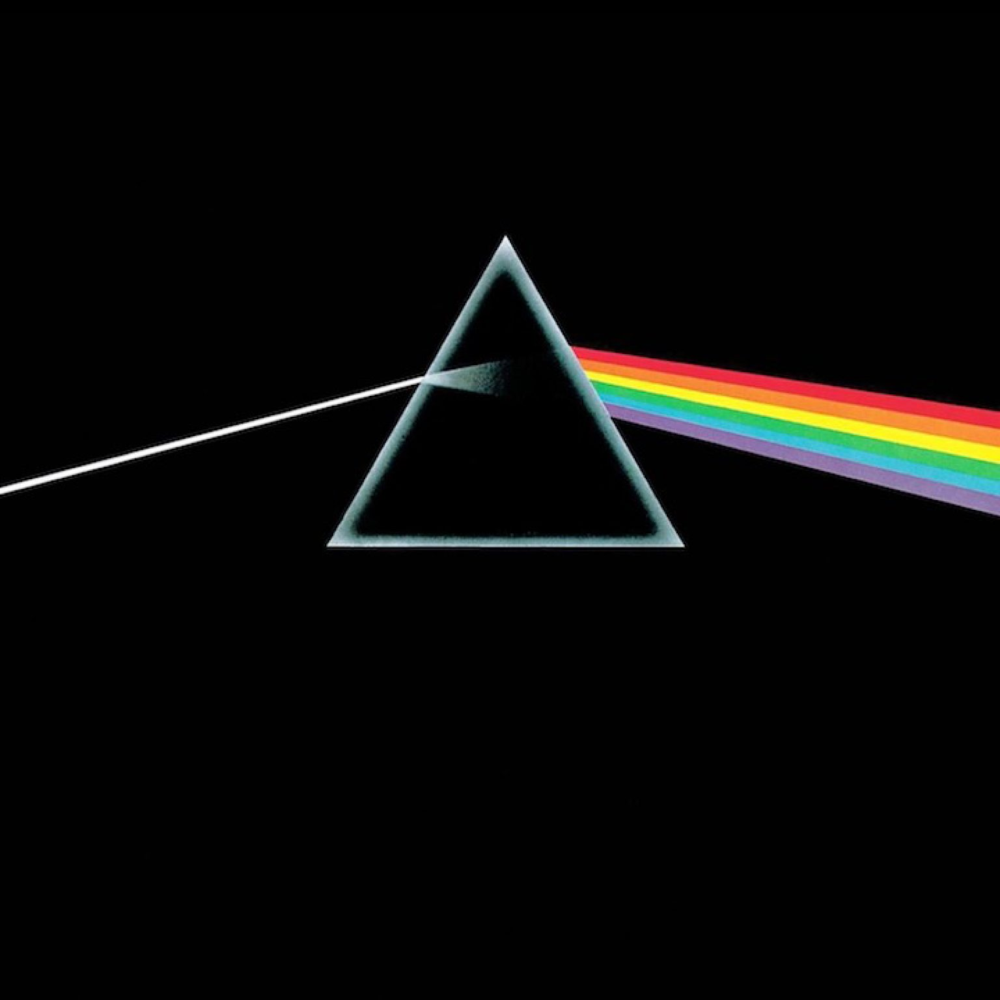
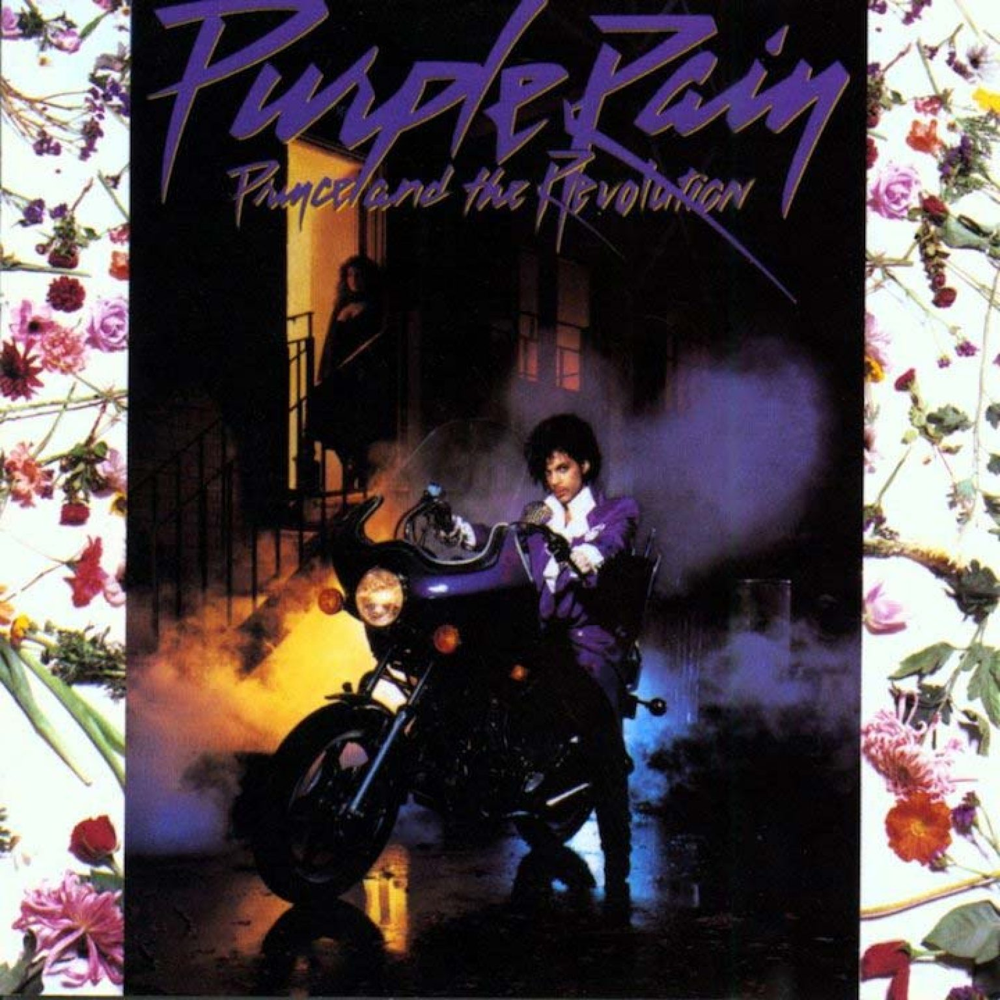

David Bowie: Aladdin-Sane (1973)Amy Winehouse: Back to Black (2006)

Beatles: Sgt Pepper's Lonely Hearts Club band (1967)Bruce Springsteen: Born In The USA (1984)

Elvis Presley: Elvis Presley (1956)

Pink Floyd: Dark Side Of The Moon (1973)

Prince. Purple Rain (1984)The Smiths: Meat Is Murder (1985)The Velvet Underground Nico